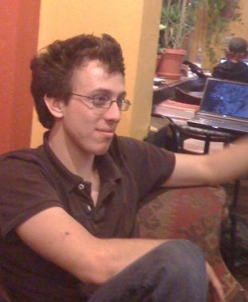
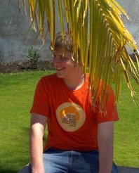
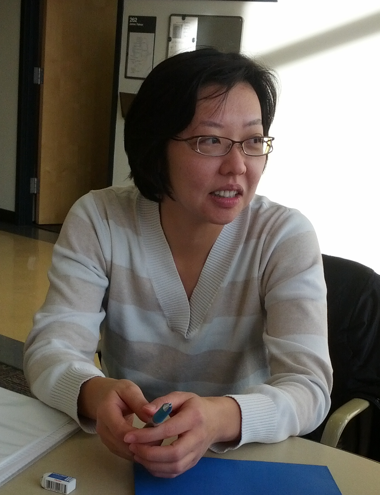
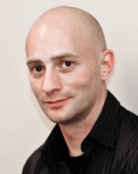

Team Profiles
Michael Brooks
Michael Brooks is a Computer Science Student at NAU. He is also security researcher with an emphasis on Web Application Security, Captchas and Cryptography. He is an active participant in the Google and Mozilla bug bounty programs. Michael promotes security education and is the top answerer of Security and Cryptography questions on StackOverflow.com (Rook). He has presented his research at Defcon four years in a row. While working in the security industry for the past 5 years, he has been testing everything from web applications to embedded flight control systems. In 2011 he obtained his CISSP certification. Michael has taken the following upper division courses at NAU: security, networking, distributed systems, automata theory, software engineering, principles of languages, and Bioinformatics. He is the leader of Team Zabeta.
Eddie Hillenbrand

Eddie Hillenbrand is a self-motivated, self-taught computer scientist. While still working on his undergraduate degree, he has published several papers with his mentor Dr. James Palmer. In addition to seeking a bachelor of science in computer science, he's also working on a minor in mathematics and a minor in linguistics. Eddie wishes to one day become a professor of computer science.
He has worked as a research assistant for the past four years at Northern Arizona University. Before that he worked as a summer camp instructor at iD Tech Camps. Eddie also briefly owned his own software company where he specialized in writing Macintosh applications many of which received great reviews in Macworld magazine and other publications.
Eddie has taken the following upper division courses in computer science: Automata Theory, Software Engineering, Principles of Languages, Computer Graphics, Operating Systems, Undergraduate Research, and Distributed Systems. Over the years Eddie has developed a love for mathematics, one of his favorite classes throughout his undergraduate career was Foundations of Mathematics. He's also taken Discrete Mathematics, Linear Algebra, and the Calculus sequence.
Eddie will lead development of the client-side Zabeta application. He will focus on designing and developing a highly usable, highly reactive user-interface using modern web technologies such as HTML5, ECMAScript 5, and CSS3.
Jonah Hirsch

Jonah Hirsch is self-motivated, insightful, and entrepreneurial student who will obtain a Bachelor of Science in Computer Science at Northern Arizona University.
While studying at Northern Arizona University, Jonah has been employed by the University's Campus Services and Activities IT department, which is responsible for nearly half of the IT infrastructure of the campus. He has developed an open-source alternative to a propriety system for his department to use, saving the university thousands of dollars per year in licensing fees.
Jonah's experience in these areas has been honed by taking upper-level courses including Ethics in Computer Science, Automata Theory, Software Engineering, Linear Algebra, Principles of Languages, Networking, Intelligent Systems, Operating Systems, Database Systems, Algorithms, Distributed Systems, Bioinformatics, and User Interfaces. Currently, his interests include Web Application Development and Mobile Application Development.
Kyoko Makino

Kyoko Makino is a driven and detail-oriented post bachelor student currently seeking a bachelor of science in computer science and a minor in mathematics at NAU. She is a motivated and organized individual with proven ability to succeed in academia and with her work experience as an assistant producer she demonstrates her success in a professional environment as well.
She is currently involved in a yearlong undergraduate research project on Behavior based Software Architecture Adaptation with Dr. Georgas at NAU. Kyoko's current skillset has been engendered through her participation in upper-level coursework such as: networking, advanced software architecture, undergraduate research, database systems, automata theory, software engineering, principles of languages, algorithms, and linear algebra.
Owain Moss

Owain Moss is a highly successful, driven, and detail-oriented student currently seeking a bachelor of science in computer science and a minor in mathematics at NAU. He is an articulate, adaptive, and motivated individual with proven ability to succeed in both academia and in a professional environment. Upon completion of his undergraduate career at NAU, Owain will be entering into graduate school to complete a master’s in computer science.
While currently maintaining a 4.0 GPA in his senior year, Owain has just been offered an internship opportunity with TGen, a bioinformatics research division in Flagstaff focused on pathogen genomics. Last year, he was given a prestigious opportunity to design and develop a database system and web application for the National Park Service.
Owain has focused his upper-level computer science education on courses such as: Networking, Distributed Systems, Advanced Software Architecture, Undergraduate Research, Database Systems, Automata Theory, Software Engineering, Principles of Languages, and Algorithms. Owain is also enthusiastic about mathematics. His minor has been concentrated on Discrete Mathematics, Linear Algebra, Modern Geometry, Differential Equations, and the Calculus sequence. A professional goal of Owain’s is to be able integrate his propensity for mathematics with his skills as a computer scientist.
His involvement with Team Zabeta will involve core system development under team leader Michael Brooks. In addition, Owain will be responsible for website management and team coordination. Preliminary tasks he has been assigned include: compiling a team inventory, website development, and logo design.